<style>
    /* 基础样式：沉浸式阅读体验 */
    body { 
        font-family: -apple-system, BlinkMacSystemFont, "Segoe UI", Roboto, "Helvetica Neue", Arial, sans-serif; 
        line-height: 1.8; 
        color: #333;
        max-width: 800px; 
        margin: 0 auto; 
        padding: 40px 20px; 
        background-color: #fff;
    }

    /* 章节单元 */
    .chapter-unit { margin-bottom: 60px; }

    /* 标题体系 */
    h1 { font-size: 2.5em; color: #3e2723; border-bottom: 3px solid #795548; padding-bottom: 15px; margin-top: 0; }
    h2 { font-size: 1.8em; color: #5d4037; margin-top: 50px; border-left: 5px solid #8d6e63; padding-left: 15px; }
    h3 { font-size: 1.4em; color: #4e342e; margin-top: 35px; font-weight: 600; }
    h4 { font-size: 1.2em; color: #6d4c41; margin-top: 25px; font-weight: bold; }
    
    /* 正文 */
    p { margin-bottom: 1.5em; text-align: justify; text-justify: inter-ideograph; }

    /* 特殊区域 */
    .sidebar { 
        background: #fbe9e7; 
        padding: 25px; 
        border-left: 5px solid #ffab91; 
        margin: 30px 0; 
        border-radius: 4px; 
    }
    
    .box-feature {
        background: #fff8e1;
        padding: 25px;
        border: 2px solid #ffe082;
        border-radius: 8px;
        margin: 40px 0;
    }
    .box-feature h3 { margin-top: 0; color: #f57f17; }

    .concept-check {
        background: #e0f2f1;
        border: 1px solid #80cbc4;
        padding: 15px;
        margin: 20px 0;
        border-radius: 6px;
        color: #00695c;
        font-weight: 500;
    }
    .concept-check::before { content: "✅ "; }

    .ultimate-question {
        background-color: #263238;
        color: #fff;
        padding: 30px;
        border-radius: 8px;
        margin: 50px 0;
    }
    .ultimate-question h3 { color: #80cbc4; border-bottom: 1px solid #546e7a; padding-bottom: 10px; }

    /* 习题/测试区域 */
    .exercises { background: #fafafa; padding: 25px; margin: 40px 0; border: 1px solid #eee; border-radius: 8px; }
    .question-list { padding-left: 20px; }
    .question-list li { margin-bottom: 10px; }

    /* 图片占位符 */
    .image-placeholder { 
        background: #f8f9fa; border: 1px solid #dee2e6; 
        display: flex; align-items: center; justify-content: center;
        margin: 25px auto 10px auto; 
        color: #6c757d; font-family: monospace; font-size: 0.8em;
        position: relative;
    }
    .image-placeholder::before { content: "🖼️ Image Area " attr(data-bbox); display: block; margin-bottom: 5px; }
    
    .caption { 
        font-size: 0.9em; 
        color: #666; 
        text-align: center; 
        margin-bottom: 35px; 
        font-style: italic; 
        padding: 0 10%;
    }
    .caption strong { font-weight: bold; color: #333; font-style: normal; }
    
    /* 科学符号优化 */
    sup, sub { font-size: 0.75em; }
</style>
<article class="chapter-unit">
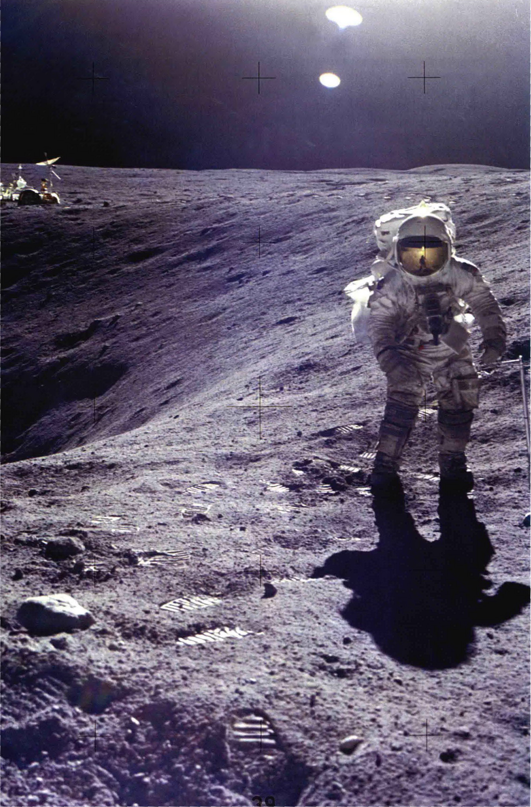
<h1>第8章 月球和水星</h1>
<h3>被烧焦和砸碎的世界</h3>
<p>月球是地球唯一的天然卫星。水星是最小的岩质行星，是离太阳最近的行星。这两个较小的天体有许多相似之处——的确，乍看之下，你甚至可能将它们误认为同一个天体。它们都布满了撞击坑，古老的表面上散落着石块和粉碎的灰尘。缺乏大气调节太阳的加热，造成从白昼到夜晚的巨大温差。并且，它们的地质都不再活动。</p>
<p>然而，尽管它们表面上相似，但月球和水星在许多重要的方面却显出不同。而正是这些差异，才使这些荒凉的天体令行星科学家感到如此有趣。为什么月球如此不像我们自己的地球——尽管它很靠近我们。为什么水星与地球和月球都如此不同？在本章，我们将探讨这两个天体的属性，从组成太阳系的行星和卫星开始进行我们的比较研究。</p>
<aside class="sidebar">
<h3>学习目标</h3>
<p>本章的学习将使你能够：</p>
<ol>
<li>确定月球和水星的一般特点，并与地球的特点进行比较。</li>
<li>描述月球和水星的表面特征，叙述这两个天体是如何经过它们历史的早期事件而形成的。</li>
<li>解释月球的自转如何被它绕地球的公转所影响，以及水星的自转如何被它绕太阳的公转所影响。</li>
<li>解释如何通过观察陨石坑用于判断天体表面的年龄。</li>
<li>描述在月球和水星上的古火山的证据。</li>
<li>比较月球与水星的内部结构。</li>
<li>总结月球的形成理论。</li>
<li>概述天文学家们如何拼凑月球的演化故事，并将其与水星的演化进行比较。</li>
</ol>
</aside>
<aside class="sidebar">
<h3>知识全景</h3>
<p>月球、水星和地球是非常不同的地方。月球和水星都更小、更冷、更热、更干燥以及具有其他一些有害的性质，且遍布撞击坑。它们与温暖、水草丰美、环境舒适的我们生活的地球完全不相似。虽然这些外星世界没有生命，但这并不一定意味着永远不会有，尤其是在我们的邻居月球上。尽管它雄伟而荒凉，但月亮也许有一天将会是人类定居的移民地，或者是一个人类未来航行向更加舒适的行星和卫星的中途站（或休息区）。</p>
</aside>

<div class="caption">
<strong>左图：</strong> 美国的载人探月工程可以说是20世纪最伟大的工程壮举，甚至也许是人类历史上最伟大的工程壮举之一。载人探月任务共进行39次，十几名宇航员登月，并全部安全返回地球。在这里，一位阿波罗16号的宇航员在Plum环形山边缘探矿所找到的岩石样本有助于揭示月球的起源。而月球车（图中左后方）载着他从登陆舱向外行进在几千米。由于月球上缺乏风和水，所以图片前景的脚印注定要存在超过一万年。[美国国家航空航天局 (NASA)]
    </div>
<h2>8.1 轨道性质</h2>
<p>我们通过检查轨道开始我们对月球和水星的研究。反过来，这方面的知识将帮助我们确定和解释这些星球上的其他性质。</p>
<h3>月球</h3>
<p>用第1章描述的视差方法，可以为我们提供相当精确的对地月距离的测量——利用地球的直径作为基线。（1.6节）雷达测距可以得到更准确的距离。月球比任何行星离地球都要近得多，所以从月球表面反射的雷达回波非常强。射电望远镜接收的回波表明一个来回耗时 2.56s。将这时间除以2，再乘以光速 (300 000km/s)，我们就得到了 384 000km 的距离。（任何指定时间的实际距离，取决于沿略呈椭圆形的轨道绕地球转的月球的具体位置。）</p>
<p>当前的激光测距技术，使用由阿波罗宇航员在月球表面放置的反射镜（探索5-1），反射从地球上发射的激光束，使得天文学家在亚微秒精度上测量往返时间。反复的测量允许天文学家在几厘米的精度内确定月球的轨道。这个精度对由计算机控制的无人飞船成功降落在月球表面是必要的。</p>
<h3>水星</h3>
<p>从地球上看，水星从不远离太阳。如图8.1 (a) 所示，这颗行星的轨道半长径为 0.4 AU，意味着其离开太阳的角距不会超过 28°。因此，只有当太阳的光线被遮住了，这颗行星才能肉眼可见——黎明或者黄昏（或更少见的，在日全食期间）——因此我们无法跟踪水星的一个完整相位周期。事实上，虽然水星被古代天文学家所周知，但他们却认为，这个太阳的同伴是两个不同的天体，他们还花了一些时间建立这颗星球在凌晨和黄昏出现的联系。然而，后来的希腊天文学家们确定，“两颗行星”其实是同一个天体在不同的位置。</p>
<p>图8.1 (b) 是一张拍摄于日落后的照片，显示水星在西方地平线之上，连同其他3颗行星和月球。</p>
<p>由于地球自转速度为 15°/h，所以水星在任何一个晚上最多可见两小时——即使在最有利的情况下。在一年中大多数时候，对于观测者而言，水星一般只在一个更短的时期内可见。如今，大型望远镜可以过滤太阳的强光以便于观察水星，即使在白天，只要行星在天空的高处——此时大气影响将较小——也有机会见到。（行星的光在到达我们的望远镜前会被大气减弱。行星高度越高，大气的消光越小。）事实上，水星的一些最好的观测结果已通过这种方式获得。但是肉眼观测者或业余天文学家一般仅限于夜间观测。</p>
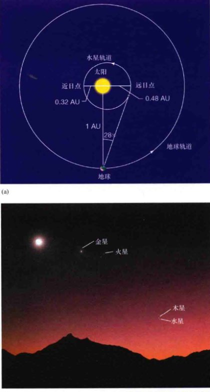
<div class="caption" style="text-align: right;">
<strong>图8.1 傍晚的天空</strong><br/>
        (a) 水星的轨道半长轴只有 0.4 AU，因此从地球上看，它永远不会偏离太阳超过28°。水星的轨道偏心率意味着只有到达特殊位置才能有这个最大的偏离，如图所示，地球与太阳的连线垂直于水星轨道的长轴并且水星在远日点附近（它距太阳最远的位置）。(b) 4颗行星，连同月亮，一起呈现在日落之后不久拍摄的这张照片中。[J.桑福德 (J.Sanford) / 照片研究有限公司 (Photo Researchers, Inc.)]
    </div>
<p>在所有情况下，水星在天空中越接近太阳，它就变得越难以被看到。因此，我们能拍到的这颗星球最好的图像只能显示出半个水星。这时候，水星与太阳的角距离最大，简称大距，如图8.2所示。（行星的距角指从地球上看，行星距离太阳的角度）。</p>
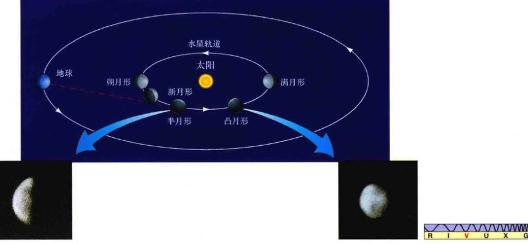
<div class="caption">
<strong>图8.2 水星的相位</strong><br/>
        我们在地球上看到的水星的外观，在其轨道的不同点会发生变化。在地球上能拍到的最好的照片（插入图）是当它处于其大距时（距太阳的角距离最大），显示出来“半个水星”，如图2.12 (a) 所示。[R.毕比 (R.Beebe)]
    </div>
<h2>8.2 物理性质</h2>
<p>从地球看，月球的角直径大约是0.5°。知道了月球的距离，我们可以很容易地计算出我们卫星的真实大小，正如第1章中讨论的那样。（详细说明 1-2）月球的半径约1700km，是地球半径的大约1/4。更精确的测量得到月球半径为1738km。用相似的推理，我们也可以判断水星的半径。在水星最接近地球，距离约0.52 AU时，我们测得水星的角直径为13"，这意味着其半径约2450km，或0.38个地球半径。无人太空探测器得到的更精确的测量结果为2440km。</p>
<p>甚至在太空时代之前，月球和水星的质量已经通过其对地球轨道的影响而被很好地测定出来。（3.2节）月球的质量是 7.3 × 10<sup>22</sup>kg，约为地球质量的1/80 (0.012)。水星的质量是 3.3 × 10<sup>23</sup>kg ——约为0.055个地球的质量。</p>
<p>月球的平均密度为 3300 kg/m<sup>3</sup>，对比一下，地球的平均密度约 5500 kg/m<sup>3</sup>，这表明月球比地球含有的重元素（如铁）更少。相比之下，水星在其他许多方面都与月球相似，它的平均密度为 5400 kg/m<sup>3</sup>，仅略小于地球。假设水星表面岩石与地球和月球表面岩石的密度相近，那么我们的结论是，水星的内部必然含有大量的高密度材料，最有可能的是铁。事实上，因为水星比地球小得多，外面覆盖的材料对其内部的挤压更弱，所以水星的铁核心所包含的相对质量必然比地球的核心更大。（3.2节）</p>
<p>由于月球和水星的质量比地球小得多，所以它们的引力场也较弱。月球表面的重力只有地球的1/6，水星的表面重力略强一点——约相当于地球重力的40%。因此，一名在地球上重 180 lb（译注：1 lb=0.45kg）的宇航员在月球上和水星上称重，就会分别只有 30 lb 和 72 lb。由此看来，阿波罗宇航员在月球上使用的那些笨重的太空服并没有它们看上去那么沉重！</p>
<p>在月球或水星上，天文学家从来没有发现任何明显的大气，无论是从地球上分析光谱或是飞船近距离探测。这是这两个天体引力场很弱的一个直接后果，正如在详细说明 5-1 (p.122) 中所描述的。简单地说，一个大质量天体更有可能保持住大气，因为天体质量越大，原子或分子逃离天体的引力控制所需要的速度就越高。月球的逃逸速度只有 2.4km/s，水星的逃逸速度为 4.2km/s，与地球的 11.2km/s 相比都小得多。任何在这两个天体形成初期或稍后在它们表面上出现的大气，现在都已经一去不复返了。（4.2节）</p>
<p>美国太空探测器水手10号在1974年和1975年飞越水星期间，发现了某种痕迹，一开始被认为是这颗星球上的大气。（探索3-2）然而，目前已知这种气体是暂时被困住的氢和氦，是由行星的引力从太阳风中“偷”来的。水星捕捉到这些气体，并将它们保持大约几个星期，然后气体便会逃逸，并再次进入太空。最近，美国宇航局的信使号探测器发现，虽然这些气体确实主要由氢和氦构成，但它们仍然包含更大质量的钠、钾、镁原子。事实上，无论是月球还是水星，都有极其稀薄的大气（小于地球大气密度的一万亿分之一）含有这些相对较重的原子。科学家认为，这些原子会被与太阳风的相互作用踢出行星表面。在任何意义上，它们并不构成一个真正的大气。因此，无论是月球还是水星，都无法对行星际空间的恶劣环境提供任何保护。这一事实对了解其表面演化和如今的外观是至关重要的。</p>
<p>月球和水星缺乏大气的调节，因此它们的表面温度变化较大。在月球赤道，中午的温度可以达到400K，远高于水的沸点。由于水星更接近太阳，所以它白天的温度会更高——地球上的射电观测表明可以高达700 K。但到了晚上或在阴影处，这两个天体的温度会下降到 100K 左右，远低于水的冰点。水星 600K 的昼夜温差是太阳系所有行星和卫星中最大的。</p>
<div class="concept-check">
<strong>概念理解检查：</strong> 为什么月球和水星不像地球那样有显著的大气？
    </div>
<div class="box-feature">
<h3>详细说明 8-1：为什么会有大气环绕？</h3>
<p>为什么有些行星和卫星有大气，而有些则没有？如果有大气，又是什么决定了大气成分？为什么只在地球上才有这样一个主要成分是氮和氧的大气层？经验表明，大多数气体会自然膨胀，占满它们能到达的所有空间。在一个房间里，香水、从不良运行的发动机里冒出的烟雾、茶壶中冒出的蒸汽，都会迅速分散，直到我们几乎无法感觉到它们。为什么我们这个星球的大气却没有发生类似的分散而飘走进入太空？</p>
<p>答案是，引力将它们拉了回来。地球引力场施加一个拉力，作用在大气中的原子和分子上，防止它们逃跑。然而，引力不是唯一的影响。如果只有引力，地球的空气在很久以前便会都下降到地球表面上。热——大气分子快速随机的运动——与引力的竞争使得大气飘浮在空中。让我们更详细一点来探讨引力和热之间的竞争。</p>
<p>所有的气体分子都在不断地随机运动。这个运动的直接体现是温度——分子运动得更快，气体更热。太阳不断地给我们这颗星球的大气提供热量，被加热的分子的快速运动产生压力，这压力会抵消引力，防止我们的大气因为自身的重量而落到地面上。</p>
<p>对天体引力强度的一个重要衡量指标是该天体的<strong>逃逸速度</strong>——任何物体想永远逃离其所在表面所需要的速度。（2.8节）此速度随着母天体（通常是一颗卫星或者一颗行星）的质量增加或半径减小而增加。取比较方便的单位（以地球为基准），它可以表示为：</p>
<p>逃逸速度 (km/s) = 11.2 $\sqrt{\text{天体质量（以地球质量表示）} / \text{天体半径（以地球半径表示）}}$</p>
<p>因此，地球的逃逸速度是 11.2 $\sqrt{1/1}$ = 11.2km/s。</p>
<p>如果母天体的质量增加到4倍，逃逸速度就要加倍。如果母天体的半径变为原来的4倍，则逃逸速度减半。换句话说，你需要很高的速度才能逃脱质量非常大或个头非常小的天体的引力，但你可以以较低的速度摆脱质量较小或个头较大的天体。</p>
<p>要确定一颗行星是否能保持住大气，我们必须比较行星的逃逸速度与行星大气气体粒子的平均速度。实际上，这样的速度不仅取决于气体的温度，同时也取决于单个分子的质量——气体越热或者分子量越小，分子的平均速度就越高：</p>
<p>分子平均速度 (km/s) = 0.157 $\sqrt{\text{气体温度 (K)} / \text{分子质量（以氢原子质量表示）}}$</p>
<p>因此，如果要增加气体样本的绝对温度到原来的4倍——例如，将温度从100K提高到400K——需要将其分子的平均速度翻倍。并且，在一个给定的温度下，氢分子 (H<sub>2</sub>: 相对分子质量=2) 在空气中移动的平均速度是氧分子 (O<sub>2</sub>: 相对分子质量=32，是氢分子的16倍) 的4倍。</p>
<p><strong>示例1：</strong> 对于地球大气层中的氮气 (N<sub>2</sub>: 相对分子质量=28) 和氧气 (O<sub>2</sub>: 相对分子质量=32)，地表附近的温度接近300K。用前面的公式计算出它们的平均分子速度：</p>
<p>氮气： 0.157 km/s $\times \sqrt{300/28} = 0.51$ km/s</p>
<p>氧气： 0.157 km/s $\times \sqrt{300/32} = 0.48$ km/s</p>
<p>这些速度远远小于分子逃逸到太空所需的 11.2km/s。其结果是，地球能够保留其氮氧大气。就整体而言，虽然大气的热导致气体分子向外逃逸，但地球引力的控制力更强，能把气体拉住。</p>
<p>在现实中，情况比简单地将速度进行比较更复杂一点。大气分子彼此碰撞或与接近地面的物体碰撞，获得或失去速度。因此，虽然我们可以用平均分子速度来描述气体的特征，但分子们却不是都以相同的速度运动的，如附图所示。任何气体分子都会有一个微小的、部分的速度远远大于平均值——平均200万个分子中有一个分子的速度是平均速度的2倍，平均每10<sup>16</sup>个分子中就有一个分子超过平均速度3倍。这意味着在任何时刻，都有一些分子的移动速度够快，能逃逸掉，即使分子的平均速度远小于逃逸速度。其结果是，行星的所有大气都慢慢泄露进入太空。</p>

<p>不要惊慌，这种泄露通常非常缓慢！根据经验，如果一个星球的逃逸速度超过给定类型的分子的平均速度6倍甚至更多，那么该类型的分子即使从太阳系形成之初到现在——46亿年——也不会逃逸出显著的数量。相反，如果逃逸速度小于给定类型的分子的平均速度的6倍，那么它们到现在大多数已经逃逸了，我们不能指望它们会出现在大气中。</p>
<p>对于地球上的空气，我们刚刚计算的氧和氮分子的平均速度低于逃逸速度的六分之一。但是，如果月球原本有一个类似地球的大气，那么月球的大气会被太阳加热到与地球现在的大气大致相同的温度，所以分子的平均速度会是大约 0.5km/s。因为月球的逃逸速度只有 11.2 $\times \sqrt{0.012/0.27} = 2.4$ km/s——小于平均分子速度的6倍，因此即使有原始月球大气，也都早已逃逸到了星际空间。水星的逃逸速度为 11.2 $\times \sqrt{0.055/0.38} = 4.2$ km/s，但是，它的表面温度峰值是700K，对应的氮或氧分子的平均速度为约 0.8km/s，超过逃逸速度的1/6，所以这些气体有充裕的时间逃脱。</p>
<p><strong>示例2：</strong> 我们可以用上述论点，了解大气成分的某些方面。在地球海平面处的大气中，氢分子 (H<sub>2</sub>: 相对分子质量=2) 运动的平均速度约 1.9km/s，它们从我们的星球形成到现在有足够的时间逃跑 ($6 \times 1.9 \text{km/s} = 11.4 \text{km/s}$，大于地球11.2km/s的逃逸速度)。因此，我们今天在地球的大气中只能发现很少的氢。然而，在木星上、温度较低（约 100K），氢分子的速度相对较慢——约 1.1km/s。与此同时，木星的逃逸速度是60km/s，比地球的高出5倍以上。由于这些原因，木星仍然保留了氢，事实上，氢是木星大气的主要成分。</p>
</div>
<h2>8.3 月球和水星的表面特征</h2>
<h3>月面地形</h3>
<p>将望远镜指向月球的第一批观测者——其中最著名的是伽利略——看到了巨大的暗区，他们认为这类似于地球的海洋。他们也看到了类似大陆的浅色区域。这两种类型的区域在图8.3中很清晰，这是一幅满月的拼接照片（由许多局部照片拼接成一张大照片）。较亮和较暗的表面特征用肉眼也能很容易看见，看上去就像“月球上的人脸”，或者中国人认为的月中有玉兔或者桂树。</p>
<p>今天我们知道，黑暗区域不是海洋，而是广泛的平坦区域，是因月球早期的熔岩流动而形成的。尽管如此，它们仍然被称为“maria”（月海），这是一个拉丁词，意思是“海洋”（单数形式：mare）。月球上有14个月海，大致呈圆形。其中最大的是雨海，直径约为1100km。较亮的区域，最初被称为terrae（高地），从拉丁语的“土地”一词而来，现在知道那是比月海高几千米的地区。因此，它们通常被称为<strong>月球高地</strong>。</p>
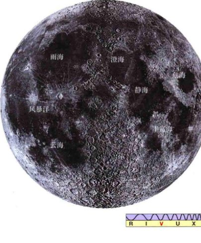
<div class="caption" style="text-align: right;">
<strong>图8.3 满月（正面）</strong><br/>
        这是满月的一幅拼接照片，其北极在顶部。因为月球自身不发光，它只有靠反射太阳光才能被我们看到。一些著名的环形山被标记在了图上。[加利福尼亚大学 (UC) / 利克天文台 (Lick Observatory)]
    </div>
<p>我们可以用肉眼区分的最小的月球地形大小约为200km。望远镜的观测进一步将其表面解析为无数的碗状凹陷，或称<strong>环形山</strong>（来源于希腊文的“碗”字）。显然，大多数环形山形成于亿万年前，主要是陨石撞击的结果。在图8.4(a)和(b)上，<strong>明暗交界线</strong>附近的环形山是最清楚的。在那里，太阳位于天空中很低的位置，会在山的背面投下长长的阴影，使我们能够区分表面上相当小的细节。</p>
<p>由于大气抖动的影响，地球上的望远镜能分辨的最小的月球对象的直径大约是1km，如图8.4(c)所示。而轨道飞行器和到访的宇航员拍摄了更加精细的照片（见探索5-1）。图8.5是从轨道飞行器拍摄的一些月球陨石坑，显示了500m直径的一些表面特征。环形山在月球表面无处不在，虽然它们在高地上更为普遍。它们有各种大小——最大的有数百千米的直径，最小的极其微小。</p>

<div class="caption">
<strong>图8.4 近观月球</strong><br/>
        (a) 下弦附近的月球。在明暗交界线附近，表面细节要明显得多，明暗交界线处的阳光以很低的角度照射，阴影突出了地形。(b) 从地球上通过大型望远镜放大查看明暗交界线附近的区域，显示出名叫雨海的中央暗区，亚平宁山脉在底部环绕。(c) (b)的局部放大。这里可见的最小环形山的直径约2km，约为地球上巴林杰陨坑的两倍大（如图8.18所示）。[加利福尼亚大学 (UC) / 利克天文台 (Lick Observatory)、帕洛玛山 (Palomar)]
    </div>
<p>根据对阿波罗宇航员和前苏联的无人登陆器带回地球的月球岩石的研究，地质学家已经确定了高地和月海在组成及年龄之间的重要差异。月球高地很大程度上是由富含铝的岩石组成，它们比月海中的物质颜色更淡、密度更低 (2900 kg/m<sup>3</sup>)。月海中的物质含有较多的铁，有较深的颜色和更高的密度 (3300 kg/m<sup>3</sup>)。粗略地讲，高地代表月球的月壳，而月海则由月幔物质构成。月海的岩石非常类似地球上的玄武岩，地质学家认为它们在月球上的产生就像地球上的玄武岩那样，来自通过地壳上涌的熔融材料。（4.3节）放射性年代测定揭示了来自高地的岩石年龄为40~44亿年，来自月海的岩石年龄为32~39亿年。（详细说明4-2）</p>
<p>所有月球的显著的表面特征都有名字。14个月海得到了奇特的拉丁名字——雨海（“雨之海”）、云海（“云之海”）、酒海（“甘露之海”）等。大多数在高原上的山脉则以地球上山脉的名字命名，比如阿尔卑斯山、喀尔巴阡山脉、亚平宁山脉、比利牛斯山等。大部分环形山用伟大的科学家或哲学家的名字命名，如柏拉图、亚里士多德、埃拉托色尼和哥白尼等。</p>
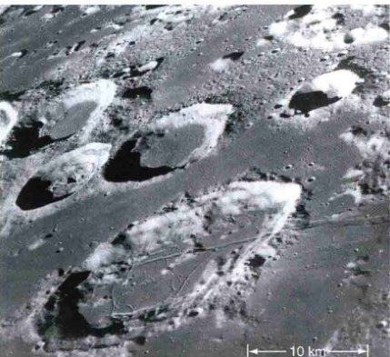
<div class="caption" style="text-align: right;">
<strong>图8.5 阿波罗飞船拍摄的月球</strong><br/>
        由阿波罗8号轨道飞行器——1968年发射的人类第一艘环绕我们的卫星的飞行器——拍摄的月球。可以看到大小不等的从20km至500m（也是长的断层线的宽度）的环形山。[美国国家航空航天局 (NASA)]
    </div>
<p>因为月球绕自转轴自转一周的时间和它绕地球公转一周的时间精确相等，所以月球有一个我们能一直在地球上看到的正面，和一个我们永远看不到的背面 (8.4节)。当月球背面首先由前苏联和后来的美国太空船（见探索5-1）测绘出来时，大多数天文学家惊奇地发现，那边没有大型的月海。月球背面（图8.6）几乎完全是高地。这一事实对月球表面地形如何生成的研究有很大的影响，因为它意味着所涉及的过程已经不能完全由月球的内部性质来解释了，地球的存在必须以某种方式发挥作用。</p>

<div class="caption" style="text-align: left;">
<strong>图8.6 满月，背面</strong><br/>
        由阿波罗16号载人探测器拍摄的月球的背面。位于中下部的大而暗的区域勾勒出南极-艾特肯盆地，是太阳系中规模最大、深度最深的撞击盆地。在月球背面只有少数小月海。[美国国家航空航天局 (NASA)]
    </div>
<div class="concept-check">
<strong>概念理解检查：</strong> 描述月球的月海与高原在哪三个重要方面有所不同。
    </div>
<h3>水星表面</h3>
<p>水星很难从地球上观察，因为水星靠近太阳。即使用一个相当大的望远镜，我们能看到的也只是一个略带粉红色的圆盘。图8.7是一张从地球上拍摄的显示出一些模糊的水星表面特征的照片。在水手10号到达水星之前，天文学家只能对那些淡淡的深色斑纹进行推测。我们现在知道，这些特征就像我们用肉眼随便看一眼月球所看到的那样。最大的陆基望远镜可以看清的水星表面特征与我们用肉眼看月亮能看清的一样。</p>
<p>图8.8是由信使号拍摄的、我们今天所知道的水星的全球图，图8.9显示了水星表面的特写。在水星上没有云、河流、沙尘暴或任何有天气存在的迹象——不管是现代还是古代。的确，大部分水星表面的环形山和月球高地具有很高的相似度。然而，水星的环形山不像月球上的那样密密麻麻，广阔的、轻微起伏的环形山间平原覆盖了水星约40%的表面。这些平原是水星表面上最古老的可见部分——它们形成于40亿年前——并且似乎覆盖了许多更早期的环形山。它们在水星的表面上大致均匀地分布着。</p>
<p>此外，水星有许多平坦的平原，类似于月球的月海，在那里，熔岩填满了大陨石撞击出来的大坑。相比月球上的月海，它们之所以没那么明显，是因为它们的颜色与水星表面的其余部分太接近了。在大多数地方，平坦的平原形成于环形山间平原形成后的几亿年中。</p>

<div class="caption" style="text-align: right;">
<strong>图8.7 水星</strong><br/>
        由地球上大型光学望远镜拍摄的水星照片，只有一些微弱的表面特征比较明显。[帕洛玛天文台 (Palomar Observatory) / 加州理工学院 (Caltech)]
    </div>
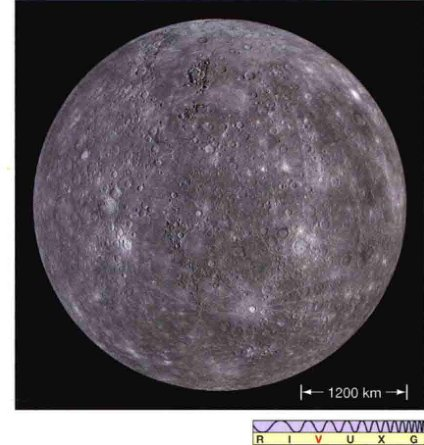
<div class="caption" style="text-align: left;">
<strong>图8.8 水星，近景</strong><br/>
        水星的这张照片是由信使号飞船在2008年飞越它时拍摄的许多照片拼接——把许多单独的照片拼接成一张全景照——而成的。注意那些年轻的、分布广泛的、有辐射纹的环形山，本图的图像分辨率大约为5km。[美国国家航空航天局 (NASA)]
    </div>

<div class="caption" style="text-align: right;">
<strong>图8.9 水星，极近景</strong><br/>
        “信使号”用更高的分辨率（约300m）拍摄的水星的另一张照片。左下角的环形山周围的黑暗物质对水星上很多大型环形山而言很典型。此暗晕的成因尚不清楚。[美国国家航空航天局 (NASA)]
    </div>
<h2>8.4 自转速率</h2>
<p>月球和水星的自转受接近它们的上级天体——地球和太阳的强烈影响。通过对造成今天的自转速率的过程的研究，天文学家了解了潮汐力在塑造太阳系细节方面的作用。</p>
<h3>月球的自转</h3>
<p>正如前文所述，月球的自转周期等于其绕地球公转的周期，约27.3天，因此月球在任何时候都保持只以一面对着地球，如图8.10所示。如果在月球正面有一名宇航员，他看到的会是地球在天空中几乎固定不动（虽然我们这颗星球的每日自转仍然很明显）。一个天体的自转周期精确地等于（或<strong>同步于</strong>）它绕另一个天体的公转周期，这样的轨道被称为<strong>同步轨道</strong>。</p>
<p>事实上，月球在同步轨道绕地球旋转绝非偶然。这是这两个天体之间的引力相互作用的一个必然结果。正如月球引发地球潮汐一样，地球也引起了月球上的潮汐隆起。事实上，因为地球比月球大得多，所以地球对月球的引潮力比月球对地球的大20倍左右，因此月球的潮汐隆起相应较大。</p>
<p>在第4章中，我们看到了月球的潮汐力如何造成地球的自转减慢，并且，最终结果是，地球将以与月球绕地球公转同样的速度自转。（4.6节）不过，地球的自转速度要想跟地月互相绕转的速度同步，可能需要数万亿年。然而，对月球而言，该过程已经完成了。月球更大的潮汐变形使它很早之前就进入了一个同步轨道，换句话说，月球已经被地球的<strong>潮汐力锁住</strong>了。大部分太阳系中的卫星也同样被其母行星的潮汐力锁定了。</p>

<div class="caption" style="text-align: right;">
<strong>图8.10 月球的同步转动</strong><br/>
        由于月球绕地球的同步转动，所以它的一面永久指向我们的星球。对于在这里所描绘出的宇航员看来，地球始终直直地在头顶上。事实上，由于地球的潮汐力，月球的形状被稍微拉长（在图中被大大夸张了），其长轴永远指向地球。它对将地球和月球作为一个单一的系统考虑是有用的。
    </div>
<h3>对水星自转的测量</h3>
<p>理论上，如果我们能看清水星表面的特征，我们就应该可以通过观察某一特定区域环绕行星的运动来简单地测量其自转速度。19世纪中叶，一位名为乔瓦尼·夏帕瑞丽 (Giovanni Schiaparelli) 的意大利天文学家就是这样做的。他总结说，水星总是以一面对着太阳，就像我们的月球永远只以一面对着地球。这个解释认为，这个所谓的同步转动与月球和地球的同步转动一样，水星因太阳的潮汐力影响而改变了它的自转速度，直到隆起部分永远直接指向太阳。虽然表面特征可能不能被看清楚，但夏帕瑞丽的观测和合理的物理解释足以说服大多数天文学家并坚持这一观点——水星自转与绕太阳的公转同步（即一周需要88个地球日）——近半个世纪。</p>
<p>1965年，天文学家用波多黎各的阿雷西博射电望远镜，对水星进行观测，发现这种长期持有的观点是错误的。他们使用阿雷西博的仪器作为一个巨大的雷达测速仪，向着这颗行星发送无线电波脉冲，并等待回波返回。（如图2.18所示的对金星的类似测量）(2.6节) 返回的脉冲远弱于原来射出去的波束，但阿雷西博射电望远镜的庞大尺寸使研究人员能够检测到反射信号，然后对其进行分析，以确定水星的自转速度。</p>

<div class="caption" style="text-align: left;">
<strong>图8.11 行星际雷达探测</strong><br/>
        从自转的行星反射的雷达波束（蓝波）反映了行星的视向速度和自转速度的信息。
    </div>
<p>为了说明基本方法，图8.11表示从一个假想的行星表面反射的雷达脉冲。反射信号作为一个整体可能会因为多普勒效应而红移或蓝移，这取决于水星对地球的总体视向速度。但除此之外，如果行星自转，朝向我们旋转的部分反射的辐射比背向我们旋转的部分反射的辐射的频率稍高（将行星的两个半球想象为单独的辐射源，其移动速度略有不同，一个朝向我们，一个远离我们）。这个效果与在《今日天文——恒星：从诞生到死亡》第3章讨论的自转谱线致宽非常相似，但这种情况下的辐射不是行星发射的，只从它的表面反射。因此，即使原来的波束只有单一频率的辐射，反射信号也会在原始频率的两侧包含一个展宽的频率。通过测量这个展宽，我们可以判断行星的自转速度。</p>
<p>通过这种方式，阿雷西博的研究人员发现，水星的自转周期不是此前一直以为的88天，而是59天——相当于行星公转周期的2/3。因为每两次公转就有整整3次自转，所以我们说，在水星的运动中有一个 <strong>3:2 的自旋-轨道共振</strong>。在本文中，术语“共振”只是意味着两个特征时间——在这里，就是水星的一天和一年——是以简单的方式彼此相关的。一个更简单的自旋-轨道共振例子是月球绕地球的轨道。在这种情况下，自转与公转是同步的，因此共振为 1:1。</p>
<p>图8.12显示了水星的古怪自转对行星上的假想居民造成的一些影响。水星的太阳日——从中午到下一个中午的时间——是2个水星年之久！太阳可以在水星黑暗的天空中保持近3个地球月之久，在这之后跟着的是近3个地球月的黑暗。在其轨道上任何给定的点，水星始终以同一面对着太阳——不是在每一次自转时，而是在任何其他时间。</p>

<div class="caption">
<strong>互动图8.12 水星的旋转</strong><br/>
        水星的公转和自转相结合，导致水星的1天是水星的2年之久。
    </div>
<h3>水星自转的解释</h3>
<p>水星的 3:2 的自转-公转共振不是偶然发生的。是什么样的机制建立和维持了它呢？在月球绕地球的情况下，1:1 的共振是潮汐力的结果。在本质上，月球的自转周期——一开始可能远远小于其现在的值——现在变长了，使由地球造成的潮汐隆起在月球上相对固定。对水星而言，则是太阳的潮汐力造成了水星的 3:2 共振，但是是以一种更加微妙的方式。</p>
<p>水星不能进入 1:1 的共振，因为它绕太阳的轨道相当古怪。根据开普勒第二定律，水星的轨道速度在近日点（最接近太阳的位置）最大、在远日点（距太阳最远的位置）最小。（详细说明2-1）很容易想到，因为行星轨道速度的这些变化，行星（以恒定的速度自转）没有办法保持在一个同步轨道。如果它的自转在近日点附近同步，就会在远日点过快；在远日点同步，在近日点的自转速度就会太慢。</p>
<p>潮汐力总是试图将瞬时轨道速度与自转速度同步，但这种同步不能在水星的整个轨道上维持。那么，发生了什么呢？当我们意识到潮汐作用随距离的增加而迅速减少时，答案就会被揭晓。水星在近日点所受的潮汐作用力远远大于远日点，因此近日点在这场竞争中“获胜”，确定了自转速度。在 3:2 共振下，水星的公转运动和自转运动在近日点几乎完全同步，因此，这一特定的自转速度是太阳对它的潮汐影响的自然“选择”的结果。请注意，水星从一个近日点运行到下一个只通过了 180°，如图8.12所示，每一次的潮汐隆起外观都相同。</p>
<p>这类共振在太阳系中经常发生。在行星的运动中、在它们的卫星和光环中，以及在许多小行星和柯伊伯带天体的轨道中，可以发现许多额外的例子。水星的自转是一个已知的最简单的非同步共振。许多共振要复杂得多。这些错综复杂的相互作用造成了我们观察到的行星系统运动的许多精致细节。</p>
<p>太阳的潮汐影响也使水星的自转轴完全垂直于轨道平面。并且因为水星的偏心轨道和自转-公转共振，结果造成其表面上的一些点比其他地方更热。特别是有两个（完全相对）的在赤道上的点，在近日点时太阳正好直射，它们是水星上最热的地方，被称为<strong>热经度</strong>。</p>
<p>中午在这两个位置的峰值温度可以达到前面提到的 700K。在温暖的经度，太阳在远日点直晒，峰值温度要低 150K 左右——仅为 550K。</p>
<p>相比之下，从水星的两极看，太阳始终在地平线上，所以温度从没有达到过火热的赤道地区的水平。地球上的雷达在20世纪90年代进行的观测表明，水星极地的温度可能低至 125K，所以尽管水星赤道是一片焦土，两极可能被大量的水冰层覆盖。（参见8.5节，有对月球上类似的发现的描述）</p>
<div class="concept-check">
<strong>概念理解检查：</strong> 引力如何影响月球和水星的自转速率？
    </div>
<h2>8.5 月面环形山和表面成分</h2>
<p>在地球上，风和水共同侵蚀着我们这颗星球的表面，并且几乎每天都在重塑其外观。再加上地球表面板块永无止境的运动，其结果是，我们这个星球表面最古老的历史大多数都丢失了。相比之下，月球上没有空气、没有水、没有板块构造，也没有持续的火山或地震活动。因此，在它几乎刚形成时的地貌今天仍清晰可见。</p>
<h3>陨石撞击</h3>
<p>造成月球表面变化的主要物体是以<strong>流星体</strong>的形式出现的星际碎片。这些物质中的大部分由岩石或金属组成，散落在整个太阳系中，在行星际空间绕太阳运动，持续也许长达数十亿年，直到它们与一些行星或卫星发生碰撞。（3.5节）在地球上，大多数流星体在大气中燃烧，产生发光的条纹，称为<strong>流星</strong>。但月球上没有大气，没有对抗这种冲击的保护伞。大型和小型的流星体飞近并与月球碰撞，有时会产生巨大的陨石坑。数十亿年后，这些撞击使月面伤痕累累、布满坑洞，雕刻了月面的地形。陨石坑今天仍在整个月球表面——甚至就在你读这段文字时——不断形成。</p>
<p>流星一般以每秒数千米的速度撞击月球。在这样的速度下，即使一小片物质也能产生巨大的能量。例如，1kg物体以 10km/s 的速度击中月球表面，会释放高达相当于 10kg TNT炸药爆炸的能量！如图8.13所示，流星与表面的撞击导致突然和巨大的压力被激发出来，加热了脆性岩石，并使月球表面像受热的塑料一样变形。随之而来的爆炸将之前的岩石层抛出，形成一个环形山。</p>
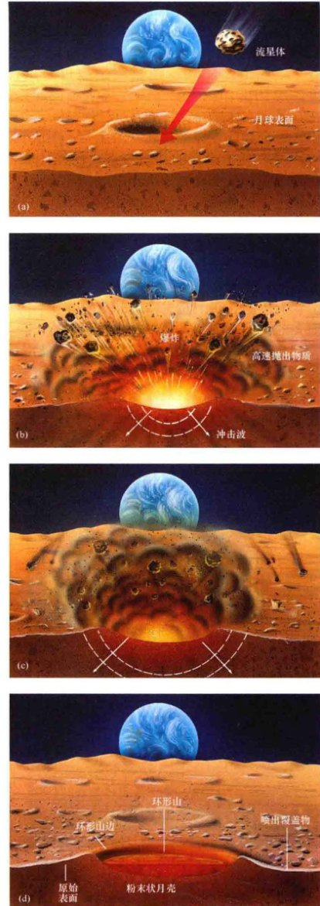
<div class="caption" style="text-align: right;">
<strong>互动图8.13 陨石撞击</strong><br/>
        由陨石撞击形成的撞击坑的几个阶段：(a) 一个流星体撞击表面，释放出大量的能量。(b, c) 产生的爆炸激出撞击地点的物质，并在地面释放出强大的冲击波。(d) 最后，一座典型的环形山，周围被一层抛出的物质所环绕。
    </div>
<p>环形山的最终直径通常是撞过来的流星体的10倍，深度则是流星体直径的2倍左右。因此，1kg的流星，也许仅仅有10cm的直径，但也会产生一个撞击坑，直径约1m，深约20cm。撞击造成的冲击波多次粉碎月球表面到一定深度并造成环形山。众多由阿波罗宇航员带回的岩石样本显示出反复脱落和融化的外观——这是由陨石撞击造成的猛烈的冲击波和高温的直接证据。爆炸抛出的材料包围在环形山周围，形成一个层，被称为<strong>喷出物毯</strong>。喷出的碎片大小不等，从细小的灰尘到大块的石头。图8.14 (a) 显示了一个特别大的陨石在月球上撞击的结果。如图 8.14 (b) 所示，较大块的喷出物本身还可能形成二次陨石坑。</p>

<div class="caption">
<strong>图8.14 大型月面环形山</strong><br/>
        (a) 冲击出这个巨大的被称为东方盆地的月球环形山的陨石，推动了很多周围的物质，它们看上去形成了同心环状的绝壁，叫作科迪勒拉山脉。最外层的环的直径近1000km。注意在更近的时候撞击在这个古老区域的更小、更清晰、更年轻的撞击坑。(b) 坐落在中间位置的两个较小的环形山——莱因霍尔德和爱丁顿，是大约10亿年前创造了90km宽的哥白尼环形山（地平线附近）的巨大撞击引发的二次撞击形成的。我们还可以清楚地看到，莱因霍尔德环形山的喷出物毯位于前景，大小约40km见方。这张图是阿波罗12号在执行任务期间从登月舱朝着东北方向拍摄的。[美国国家航空航天局 (NASA)]
    </div>
<p>除了质量1g或以上的流星体的轰击之外，稳定的<strong>微流星体</strong>“雨”（质量范围从几微克到1g的小碎片）也会蚕食月球表面的结构。在图8.15中可以看到一些例子，这是一张显微照片（通过显微镜拍摄的照片）、显示了阿波罗宇航员带回地球的一些像玻璃的“珠子”。这些珠子是因为陨石撞击之后的爆炸形成的——表面岩石熔化、喷出并迅速冷却后形成珠子。请注意，有几个珠子也显示了在它们冷却和固化以后，又受到了后来的微流星体的新的撞击。</p>
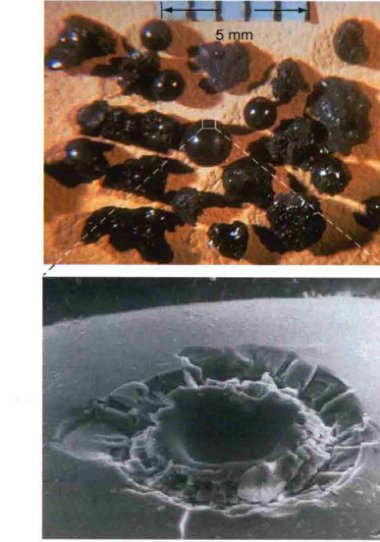
<div class="caption" style="text-align: left;">
<strong>图8.15 微陨坑</strong><br/>
        各种大小的撞击坑让月球景观丰富多彩。这里展示了一些——嵌在由阿波罗宇航员带回来的像玻璃的珠子中，据测量大小只有0.01mm（上方的刻度线是毫米）。珠子本身是在流星体撞击引发的爆炸过程中，因表层岩石熔化、喷出并迅速冷却而形成的。[美国国家航空航天局 (NASA)]
    </div>
<p>事实上，撞击率随着撞击坑的增大而迅速下降——新的大撞击坑是稀缺的，但小撞击坑很常见。这个原因很简单：在星际空间中只有不多的大块碎片，因此它们与月球的碰撞是罕见的。按照目前的平均概率，新的10km直径的月球撞击坑大约每10亿年才会形成一个，而1m大小的撞击坑大约每月就会形成一个，而每隔几分钟就会形成厘米级大小的撞击坑。</p>
<h3>月球的撞击史</h3>
<p>天文学家可以使用已知年龄（通过放射性年代测定）的月球岩石估计过去的撞击率。这项工作的一个非常重要的结果是发现了在约40亿年前，月球经历了长时间的猛烈的陨石轰击。事实上，这是一个关键的证据，支持太阳系形成的凝聚理论。（3.6节）</p>
<p>正如我们所看到的，布满了陨石坑的高地比陨石坑较少的月海更古老，但撞击率的差异并不是简单地跟暴露在外的时间有关。天文学家现在认为，月球——想必还有整个太阳系内部——在39亿年前经历了陨石轰击密度的突然下降。高地在此之前就已经凝固，于是承受了大多数这样的撞击，而月海在后来才凝固。从那以后，撞击率一直保持在较低的水平。</p>
<p>由月海组成的巨大月面盆地被认为在密集撞击的最后阶段才形成，约在39亿~41亿年前。在随后的火山活动中，熔岩填满了撞击坑，最终形成了我们今天看到的由熔岩变成的坚硬的岩石。那么，在某种意义上说，月海确实是海洋——熔岩形成的海洋，现在凝固了。</p>
<p>然而并非所有这些巨大的撞击坑都充斥着熔岩。最年轻的撞击坑之一是<strong>东方盆地</strong> [见图8.14(a)]，约39亿年前形成的。这个撞击坑没有经过太多后来的火山活动，因此我们可以分辨其结构并将其作为一个撞击坑，而不是一个月海。类似的“未被淹没”的盆地被认为是在月球的背面，如图8.6所示。</p>
<p>除了在地球上发现的陨石外，月球是唯一我们有准确的年龄测量结果的太阳系天体——通过对拿回地球的样品进行放射性测龄。然而，研究月球环形山为天文学家提供了一个在太阳系中估计天体年龄的重要替代手段。通过对一颗行星、卫星或小行星上的撞击坑进行计数，并和月球上的数字进行比较，那么就可以得到天体表面的大致年龄。事实上，这是在接下来的几章里最常出现的确定年龄的方法。需要注意的是，与放射性年代测定类似，该技术只能测量被测天体表面凝固后的年龄——如果岩石是熔融状态，那么所有的撞击坑都会被毁灭，时钟会复位。（详细说明4-2）</p>
<h3>月尘</h3>
<p>流星体撞击月球是造成一层喷出粉末层——也被叫作<strong>月尘</strong>或<strong>月壤</strong>（意思是精致的岩石层）——的主要原因，这个粉末层覆盖了月面平均大约20m深。这种微小尘埃的一个典型颗粒的尺寸约为0.01mm。它们有很强的一致性，像滑石粉或预拌干混砂浆。</p>
<p>图8.16显示了阿波罗号宇航员在月壤上的脚印。这些月壤在月海里最薄 (10m)，在高地上最厚（超过100m深）。</p>

<div class="caption" style="text-align: left;">
<strong>图8.16 月壤</strong><br/>
        月球的土壤或风化层，是一层覆盖月球表面的粉状灰尘，深度约20m。图中，一名阿波罗宇航员在调整一些仪器，以测试哈德利山附近土壤的组成。他的脚印显示，该宇航员的体重如何令月壤陷进去几厘米的深度。[美国国家航空航天局 (NASA)]
    </div>
<p>来自太空的永恒“炮击”将导致缓慢但稳定的月球表面的侵蚀。在图8.17前景中可见环形山的不清晰边缘，是这一过程的结果。如果没有这样的侵蚀，这些景观到今天仍然将会是锯齿状或多棱角的，和它们形成时一样。相反，由于无数的撞击所造成的月尘的稳定积累，平滑了这些轮廓，并可能会在大约1亿年内将它们完全抹去。</p>

<div class="caption" style="text-align: right;">
<strong>图8.17 月球表面</strong><br/>
        尽管在没有空气的月球上缺乏风和水，它的表面却仍然被永恒的陨石“雨”——尤其是微流星体——一点点地侵蚀了。注意这张图中丘陵的模糊边缘，以及阿波罗宇航员围绕登陆舱的脚印（左）和“月球车”的行驶痕迹（右）。[美国国家航空航天局 (NASA)]
    </div>
<p>从已知的环形山大小与撞击率的关系，行星科学家们可以通过实际观察到的大环形山的数字，计算出他们可能找到多少个小的环形山。当他们进行这个计算时，他们发现不足20m深的环形山缺失了。这些“失踪”的环形山在月球的漫长历史中因侵蚀而被填满。这使我们能做出一个非常粗略的估计，平均侵蚀速率为：每十亿年5m左右，大约为地球上侵蚀率的1/10 000。</p>
<p>目前，月球的侵蚀速率非常低，因为陨石轰击月球比地球上的风和水造成的侵蚀效果差很远。为了便于比较，在亚利桑那州的沙漠，有地球上最大的陨石撞击坑，叫巴林杰陨石坑（见图8.18），仅有25 000岁，但已经被明显侵蚀了，它可能会在短短几百万年中完全消失——就地质时间而言相当短。如果一个那样大的陨石坑，在40亿年前在月球上形成，那它甚至到今天也仍然会清晰可见。如图8.16所示的浅脚印都可能数百万年保持不变。</p>
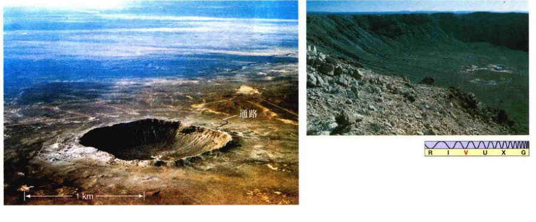
<div class="caption" style="text-align: left;">
<strong>图8.18 巴林杰陨坑</strong><br/>
        巴林杰陨坑位于美国亚利桑那州的温斯洛附近，直径1.2km、深0.2km。（注意，右边的一条路可以作为参照物。）地质学家认为，一个大的陨石于大约25 000年前撞击了地球，形成了这个陨石坑。陨石可能约50m大，约20万吨重。插入图显示了这个陨石坑一处内壁的特写。[美国地质调查局 (U.S.Geological Survey)]
    </div>
<h3>月球上有冰？</h3>
<p>与地球的土壤相反，月壤中不包含由生物产生的有机物质。在月球上没有任何生命存在，在任何阿波罗样品中也没有发现化石。月球表面是不毛之地，而且显然一直都是。NASA是如此确信这一点，以至于最后几批登陆月面的阿波罗宇航员再回到地球时甚至没有进行检疫隔离。此外，所有由美国和苏联的月球计划带回的月球样品都是完全干燥的——它们甚至不含有将水分子锁定在其晶体结构内的矿物质。地球的岩石则相反，几乎总含有1%~2%的水。缺水的主要原因是月球缺乏大气和月球表面的大部分地区都有很高的白昼温度（高达400K）。</p>
<p>月球的某些地区被认为可能含有水，但是是以冰的形式存在的。早在20世纪60年代，一些科学家们就认为，月球两极附近可能理论上存在着冰。由于在月球的两极地区，太阳升出地平线的高度从来不会超过几度，因此两极附近的撞击坑中的永久阴影区的温度从未超过大约100K，因此，这些科学家的理论认为，那里的任何水冰都有可能从太阳系非常早期以来就保持永久冻结，从来没有融化或汽化，因此也从来没有逃逸进入过太空。</p>
<p>1996年，克莱门汀探测任务（见探索5-1）的控制者号报告，从月球南极附近的一个古老的、很深的环形山上接收的雷达回波显示了低密度物质的沉积，可能是水冰，在大约几米的深度。1998年，美国宇航局的月球勘探者任务报告在月球的两极有大量的冰——可能总共有万亿吨。起初，水冰似乎主要是以微小的结晶体混合月壤的形式出现，蔓延超过数千平方千米，深埋在环形山阴影下的土壤中。然而，接下来进行的数据分析认为，绝大多数水冰可能不是以这种形式存在的，而是比较简单地集中在月球表面下的所谓的“湖”中。</p>
<p>鉴于这一发现的潜在重要性，NASA希望获得有关月球上水冰的更多信息。在1999年，当月球勘探者号接近其运行寿命的尾声时，任务规划者指挥它撞进休梅克环形山——在月球南极附近的水冰有可能藏匿得很深的环形山之一。人们的希望是，地球上的望远镜可能会检测到撞击释放的水蒸气的光谱信息。然而，并没有看到水蒸气。</p>
<p>2009年，NASA再次在更大的尺度上尝试，进行了月球环形山观测和传感卫星 (LCROSS) 任务，并与月球勘测轨道飞行器 (LRO) 任务（见探索5-1）一起发射。半人马座火箭将两个飞船推进到月球轨道，然后撞向月球南极附近的另一个被阴影深深笼罩的凯布斯环形山中，而LCROSS则在几千千米外观测，接收撞击的光谱数据并通过LRO传回地球。几分钟后，LCROSS也撞向了月球。几个星期后，NASA的科学家宣布，通过对LCROSS探测器的数据的详细分析，证实了喷出物中存在水分子。水的储量不是很大——只有约十万分之一，低于地球上沙漠中的沙子——但已经足够支持早先的报告了。</p>
<p>但是，在科学探索的前沿，没有什么是确定的。（1.2节）2012年发布的LRO对沙克尔顿环形山——又一座南极环形山——的详细观测，对月球水冰的探测也没有得到明确的结论。这表明，对于观测结果而言，地下冰是一种可能的解释，但不是唯一的或者最可能的解释。</p>
<p>如果月球上存在水冰，那么这些冰从何而来？最有可能的是，它们被流星和彗星带到了月球表面，正如我们之前看到的关于地球上的水的来历。（3.7节）任何在撞击中幸存下来的冰会散落在月球表面，在月球上的大部分地方、冰会迅速汽化，逃逸回太空；只有在两极附近的深盆地里，它们才能幸存下来，并随着时间的推移慢慢积累。好了，现在我们不管其来源，极地冰盖可能对任何严肃的人类移民月球的尝试都是至关重要的：从地球到月球运送一千克的水的预期成本在2000~20 000美元之间。</p>
<h3>月球火山活动</h3>
<p>几十年前，科学界关于月球环形山的起源有一场论战，大多数科学家认为，环形山是火山活动的结果。现在我们知道，几乎所有的月球环形山实际上都起源于陨石。然而，少数显然不是。图8.19显示了一些环形山直直地形成了一个有趣的环形山链，这个链是如此之直，以至于极不可能产生于流星对月球表面的随机碰撞。相反，这个链可能标记了一个表面断层的位置——表面的破裂或剪切使得熔融物能够从下方涌出的地方。由于熔岩冷却，在每个裂缝上都形成了一个固态的“圆顶”。随后，底层熔岩退去，中心的圆顶坍塌，形成今天我们看到的环形山。类似的地貌已经被麦哲伦探测器观察到了（见第6章）。（探索3-2）</p>

<div class="caption" style="text-align: left;">
<strong>图8.19 环形山链</strong><br/>
        这条整齐排列的环形山链由阿波罗14号的一名宇航员拍摄。最大的一座环形山被称为“戴维”，位于云海的西部边缘。[美国国家航空航天局 (NASA)]
    </div>
<p>月球火山活动的许多其他例子，通过地球上望远镜的观测和阿波罗任务期间拍摄的特写照片为我们所知。图8.20显示了<strong>火山溪</strong>——熔岩曾经流过的沟渠。在月球历史的早期，其表面有火山存在的很好的证据，火山活动解释了形成月海的熔岩的存在。然而，曾经存在于月球上的火山活动很久以前就结束了，从月球上带回的所有岩石样本的年龄都大于30亿年。（回想一下详细说明4-2中所说的，放射性时钟在岩石凝固时开始计时。）显然，月海凝固超过30亿年，从那以后，月球一直处于休眠状态。</p>

<div class="caption" style="text-align: right;">
<strong>图8.20 月球火山活动</strong><br/>
        这里可以清楚地看到，绕月球飞行的阿波罗15号飞船拍摄的一个火山沟渠（底部中间），它叫哈德利月溪，蜿蜒曲折地穿过月海。这条峡谷系统在雨海（左侧）边缘，沿着亚平宁山脉（右下）的底部延伸。一侧有阴影的、位于右下角的最突出的高峰，叫哈德利山，高度接近5km。[美国国家航空航天局 (NASA)]
    </div>
<div class="concept-check">
<strong>概念理解检查：</strong> 陨石轰击如何影响月球表面？
    </div>
<h2>8.6 水星表面</h2>
<p>如同月球上的环形山，水星上的几乎所有环形山都是陨石撞击的结果。然而，水星的环形山没有月球上的那么深，它们的山壁一般也不如月球上的那么高，喷出的物质看上去都降落到了离撞击点很近的位置，与我们预期的完全一样，因为水星的表面重力更强（是月球表面重力的两倍多一点点）。</p>
<p>在水手10号访问之后，对水星环形山相对缺乏的主要解释是：老环形山都被火山活动填满了，很像月球上月海填满了老环形山。信使号更详细的观测也支持这个结论，许多地质学家认为，水星的地壳是经过反复的火山喷发而形成的。尽管如此，这些泛滥的火山显然与撞击盆地无关，这表明水星上火山的过去与月球上的显著不同。</p>
<p>至少有两个类型的水星表面特征没有在月球上被发现。图8.21 (a) 显示了<strong>悬崖</strong>或绝壁，其外观不像火山或任何其他我们熟悉的地质活动的结果。它跨越了几个环形山，表明无论它是怎么形成的、它都形成于40亿年前大部分的陨石轰击事件结束之后。没有证据表明水星有类似地球的板块构造运动——没有断层线、扩散点或任何已知的板块碰撞的迹象。（4.4节）通过水手号和信使号的图像，我们发现了许多悬崖，它们可能是在很久以前行星内部冷却和收缩时形成的，就像一个古老的、萎缩的苹果的皮上褶皱。</p>
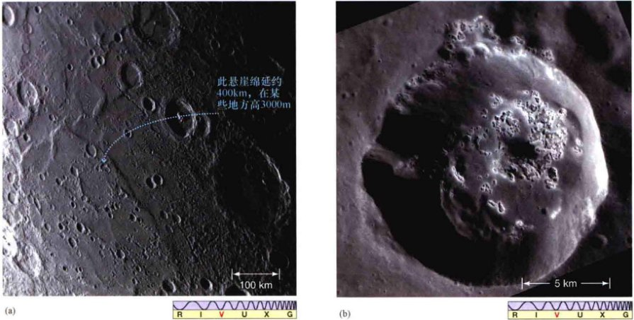
<div class="caption">
<strong>图8.21 水星表面</strong><br/>
        (a) 信使号探测器拍摄的水星表面上的悬崖或山脊。这个悬崖在水星的早期历史阶段似乎就已经形成了，地壳的冷却和收缩导致了这一表面折痕。(b) 信使号还发现了奇特的“坑洼”——在太阳系其他任何地方都没有看到过的陆地特征。它们在这里呈现为一个环形山边缘和山底的浅色凹陷。[美国国家航空航天局 (NASA)]
    </div>
<p>信使号发现的水星地貌的第二个独特之处，是一组被统称为“坑洼”——小、浅、形状不规则、无边框的凹陷——的特征，常常在环形山的中心附近成群出现［见图8.21 (b)］。出人意料的是，许多坑洼拥有明亮、新鲜的外观，表明它们可能是今天刚刚形成的。它们不是撞击坑，但它们似乎是由撞击坑引起的次级反应形成的。科学家推断陨石撞击能挖起暴露于水星表面恶劣环境中的不稳定物质。剧烈的热和太阳风可能会蒸发一些轻矿物，削弱剩余的岩石并使其沉降。如果是这样，那么这些特征就是水星靠近太阳的直接结果。</p>
<p>图8.22显示了可能是水星历史上最后一个重大地质事件的结果：一个叫作卡洛里盆地的巨大的公牛眼睛一样的撞击坑，形成于亿万年前一颗大的小行星的撞击。（它之所以叫这个名字，是因为它坐落在水星的“热经度”——8.3节——接近这颗行星的赤道，卡洛里的词根卡洛尔是拉丁语“热”的意思。）将这个盆地与月球上的东方盆地 [如图8.14 (a) 所示] 相比较，两个撞击坑的结构非常相似，但这里仍然有一个谜：卡洛里地面上的可见特征与月球上看到的完全不同。它们的起源，与其地面本身的组成物一样，都是未知的。</p>

<div class="caption" style="text-align: right;">
<strong>图8.22 卡洛里盆地</strong><br/>
        水星最显著的地质特征——卡洛里盆地——跨越大约1400km，它被某些地方可以高达3km的同心山脉所环抱。这个巨大的圆形盆地，以橙色显示在这张信使号的伪彩色可见光图像上，其大小类似月球的雨海，跨越水星半径的一半以上。[美国国家航空航天局 (NASA)]
    </div>
<p>创造了卡洛里盆地的这次撞击是如此巨大，它显然发出了强烈的地震波，回荡在整个星球。在水星上与卡路里盆地相对的一侧，有一个区域，具有奇怪的波纹和波浪形的表面特征，这通常被称为“怪异（或混乱）地形”。科学家推论说，这种地形的产生，是地震波从卡路里撞击点开始向四周传播，传遍整个星球表面，并径直汇聚在相反的地点，对该地表面造成了大规模的破坏，如图8.23所示。</p>

<div class="caption" style="text-align: left;">
<strong>图8.23 怪异的地形</strong><br/>
        卡洛里盆地撞击形成的地震波也许创造了该星球正对面的怪异地形。
    </div>
<div class="concept-check">
<strong>概念理解检查：</strong> 水星上的悬崖与地球上的地质断层有什么不同？
    </div>
<h2>8.7 内部</h2>
<p>在第4章中，我们看到了地质学家如何将地球的密度、重力，以及磁场等不同参数的测量与地震研究和数学模型相结合，以建立详细的行星内部模型。（4.1节、4.3节和4.5节）行星科学家们试图对月球和水星做几乎同样的事，但因为数据不太详细，所以得出的结论相对不太精确。</p>
<h3>月球</h3>
<p>月球的平均密度约 3300kg/m<sup>3</sup>，与已经测出的月球表面岩石的密度相类似，这就从根本上消除了月球像地球一样拥有一个大型的、大质量的、非常密集的镍铁核心的任何机会。事实上，低密度意味着，与我们地球上的这些金属的数量相比，整个月球实际上缺乏铁和其他重金属。</p>
<p>没有任何证据证明月球具有大型磁场。月球勘探者号检测到了非常微弱的表面磁场——小于地球磁场的千分之一——显然与一些大型的撞击盆地有关，但这些都不被认为与月球的核心相关。正如我们在第4章中看到的，研究人员认为，行星磁场需要一个快速自转的液态铁核心——比如地球。（4.5节）因此，月球之所以没有磁场，可能是因为月球的自转很缓慢，或因为缺乏液态核心，或两者兼而有之。</p>
<p>根据地震数据、引力和磁场的测量，以及一个很好的数学模型，研究人员给出了可能的月球内部结构。图8.24展示了月球的内部结构。该模型显示，中央核心的半径大约为330km，周围包围着大约400km厚的内月幔——半固态的岩石，性质类似于地球的软流层。（4.4节）在内月幔之上是900km厚的外月幔，最上方是30km厚的月壳，正如GRAIL测量的（见探索5-1）——只比地球的地壳厚一点儿。总之，这些外层构成了月球的岩石圈。</p>
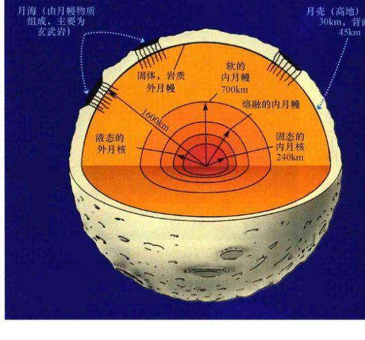
<div class="caption" style="text-align: right;">
<strong>图8.24 月球内部</strong><br/>
        月球的剖面图。不像地球岩质的岩石圈，月球的岩石圈很厚——近900km。岩石圈下面是内月幔或月球软流层——类似地球地幔上部区域的半固体层。
    </div>
<p>月球勘探者号的重力实验数据，结合在月球通过地球磁场的“尾巴”时进行的测量，如图4.18所示，暗示月球的核心可能比月球剩余部分的密度更高，因此含有更多的铁。理论模型预测其中心温度可能低至 1500K，这一温度太低了，无法熔化岩石。然而，对阿波罗宇航员留在月面上的探测设备收集的地震数据（见探索5-1）的最新分析认为，月球核心的最内部分可能至少有部分是熔融的，这意味着其温度略高。就目前我们所知道的，月球有一个固态的、主要成分是铁的、半径约为240km的内核。月核的其余部分，以及包围月核的内月幔的最里面150km是液态的。</p>
<p>在月核外面，月幔的密度似乎是均匀的，尽管它在化学上有区别（即，从深深的内部到表面附近，它的化学性质发生了变化）。形成了月球高地的月壳物质比月幔更轻，而月幔的物质成分类似于月海。</p>
<p>GRAIL号任务发现，月球“饱经风霜”的月壳断裂和粉碎，一直延伸到几千米的深度，给了它一个有点多孔的结构和比我们先前想象的更低的密度 (2600kg/m<sup>3</sup>)。此外，虽然月壳的平均厚度约30km，但其厚度的变化是相当大的，月球背面某些地方厚达60km，而正面一些大型盆地底部的厚度几乎为零，如图8.24所示。平均而言，月球背面的月壳比朝向地球的正面一侧要厚10~15km。如果我们假设熔岩由表面阻力最小的路线到达表面，那么我们可以很容易地理解为什么月球的背面没有大的月海——火山活动在背面根本没有发生，因为月壳太厚了。</p>
<p>为什么背面的月壳较厚？答案可能与地球的引力作用有关。正如较重的材料往往会下沉到地球的中心，高密度的月幔在地球的引力场中倾向于下沉到较轻的月壳下方。这种倾向的影响使月壳和月幔为了不阻碍对方，而稍微偏离中心。月幔被拉得接近地球一点，月壳则离得稍远。因此，月壳在正面变薄，在背面则变厚。</p>
<h3>水星</h3>
<p>水手10号发现的水星磁场的强度大约是地球的1%。事实上，水星有磁场这一发现对于行星科学家来说是一个惊喜。经检测，月球没有磁场（事实上，金星和火星也没有），科学家此前预计水星也没有可测量的磁性。水星自转速度不够快（而这是一个行星发电机工作所必需的），但却有围绕它的磁场。（4.5节）虽然弱，但至少足够强大到能让太阳风偏转，并创建一个小的围绕行星的磁层。</p>
<p>信使号到来之前，科学家认为水星磁场很可能是一个可以追溯到遥远过去——当行星的核心凝固时——的“化石遗迹”。然而，通过信使号的详细观测表明，磁场是由这颗星球核心的“发电机”的运动所产生的，就像地球一样。（4.5节）其实，信使号团队更早得到的惊喜是，在2008年1月和10月之间，信使号对这个行星的两次飞越，测量了水星磁场的变化程度。这样的相对强的磁场，是否可以通过行星的缓慢自转而产生仍有待解决。同样尚无解释的是，整个磁场模式从水星的中心向北极点偏移了近500km。</p>
<p>水星的磁场和较大的平均密度，意味着该行星是分化的。根据信使号的测量，该行星看起来有一个固态的内核，其半径或许为1600km，其外面被一个半径为2100km的液态外核包围。可能有一个密度不太高的类似月幔的水星幔位于这个核心的上方，厚度约为350km。大约60%的水星的体积或其质量的80%，被包含在巨大的铁芯中。水星核心体积占整个星球的总体积的比例比太阳系中任何其他天体都大。图8.25显示了地球、月球和水星的相对大小和内部结构。</p>
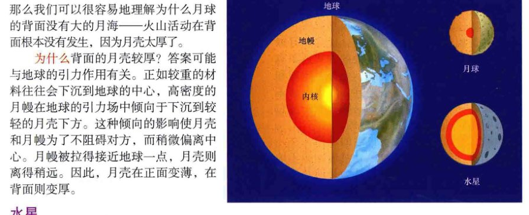
<div class="caption" style="text-align: right;">
<strong>图8.25 类地天体的内部</strong><br/>
        地球、月球和水星的内部结构以同样的比例尺画出。注意水星的内部核心所占的比例是多么巨大。行星的内部结构是比较行星学全球主题的关键。
    </div>
<div class="concept-check">
<strong>科学过程理解检查：</strong> 为什么我们不期望在月球或水星上有强磁场？
    </div>
<h2>8.8 月球起源</h2>
<p>多年来，许多理论已经考虑到了月球的起源。然而，月球和地球之间的相似性和差异性凑起来，让许多本来很有前途的解释月球存在的尝试失败了。</p>
<h3>月球形成理论</h3>
<p>有一种理论（姐妹理论或“同源说”）认为，月球的形成与我们地球的形成方式大致相同，合并在一起并最终形成地球的原始“碎片”，也大致在同一时间在地球附近形成了一个单独的天体——月球。这两个天体因而形成一个双行星系统，每个都绕它们共同的质量中心旋转。这种假说虽然曾经被许多天文学家青睐，却存在一个重大缺陷：月球与地球在密度和组成方面都不同，因此难以说明它们如何能起源于同一行星前物质。</p>
<p>第二种理论（捕获理论）认为，月球在远离地球的地方形成，后来被地球捕获。通过这种方式，这两个天体的密度和成分不必相似，因为月球可能在早期太阳系的另一个完全不同的区域形成。反对这一理论的人则认为，捕获月球是一个非常困难的事件，甚至可能是完全不可能的。因为月球的质量相对地球而言是如此之大。这并不是说我们的月球是太阳系中最大的天然卫星，但它与其母行星相比是非常大的。数学模型表明，以下事件是相当令人难以置信的：地球和月球在过去的某个时候以恰到好处的方式近距离接触，导致地球将月球捕获。此外，地球和月球在成分上虽然有显著差异，但也有许多相似之处——尤其是两者的“幔”——使它们不可能是完全彼此独立形成的。</p>
<p>第三种理论，也是更古老的理论（女儿理论，或“分裂说”）推测，月球起源于地球本身。太平洋盆地通常被认为是前月球物质撕裂出去的地方——也许，一团年轻的飞速旋转的、熔融的地球物质被甩了出去。事实上，月球的外月幔和地球的太平洋盆地的一些物质在化学上的确有相似之处。然而，这种理论并没有解决最根本的问题：地球有没有可能以如此之快的速度自转，以至于甩出一个月球那么大的物体。此外，计算机模拟表明，将月球弹射到一个稳定的轨道的情况根本就不会发生。因此，至少这种形式的“女儿理论”不再被人认真对待。</p>
<h3>撞击理论</h3>
<p>今天，许多天文学家青睐“捕获论”和“女儿理论”的混合体。这种想法——通常被称为<strong>“撞击理论”</strong>——假设，一个较大的、火星大小的天体，与足够年轻的、熔融状态的地球相撞。这种撞击在太阳系早期可能相当频繁。（3.7节）撞击理论所推测的碰撞比正面撞击要斜一些——是侧着撞的，导致我们这个星球的物质脱落，然后重新汇聚，形成月球。</p>
<p>对这样一个灾难性事件的计算机模拟表明，大部分四溅的地球碎片，可以合并在一个稳定的轨道。图8.26显示了这一计算的某些阶段。如果在地球已经形成了铁芯的时候发生碰撞，那么月球的确会由类似地球地幔的物质组成。在碰撞过程中，碰撞天体本身如果有铁芯的话，就会遗留在地球上，最终成为地球核心的一部分。因此，无论是月球与地球的整体相似度还是月球缺乏一个致密的核心，都被这一理论很自然地解释了。</p>
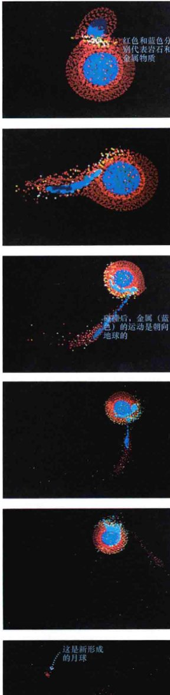
<div class="caption" style="text-align: left;">
<strong>互动图8.26 月球的形成</strong><br/>
        该序列显示了一次模拟碰撞，发生在地球和一个火星大小的天体之间，从上到下进行，并逐渐拉近。请注意撞击的铁质核心有多大比例成了地球的一部分，导致月球主要由岩石材料构成。[W.本兹 (W. Benz)]
    </div>
<p>在过去的20年里，行星科学家已经认识到，像这样的碰撞可能在所有类地行星的形成阶段都起了重要作用。（3.6节）因为这类事件的随机性，以及月球的独特地位——它是内太阳系唯一的大型卫星，我们似乎应该认为，月球也许不能为研究太阳系中的其他卫星提供一个特别有用的模型。相反，正如我们将看到的，月球的性质在很大程度上取决于其母行星的特点。</p>
<p>然而，为了了解月球起源而进行的探索，突出理论和观测之间的相互影响，是现代科学的重要特征。（1.2节）一代又一代无人和载人登月探测器的详细数据也可以让天文学家区分相互矛盾的月球形成理论，丢弃一些，完善一些。同时，太阳系形成的凝聚理论提供了一种自然的环境，使得当前最为可信的撞击理论得以很自然地发生。（3.6节）事实上，如果没有行星由较小的物体碰撞而形成这一想法，这种撞击理论就会一直被视为不可能的理论，而绝不会发展壮大。</p>
<p>最后，不要认为月球形成的每一个细节都已被了解或已被专家认同。这一理论还远不完善，仍不足以解释月球的物理和化学组成的一些重要方面。例如，月球在其形成时处于何种程度的熔融状态，目前的模型是否与所观察到的月球成分一致——虽然GRAIL最近对月球月壳密度的修正工作提高了后面这个问题的理论和观测的一致性，但撞击理论很可能不会是这个问题的最后一个理论。然而，过去的科学方法的经验为我们提供了信心，将来的许多弯路和曲折最终会让我们更完整地了解我们在太空中最近的邻居。</p>
<div class="concept-check">
<strong>科学过程理解检查：</strong> 目前最受青睐的月球起源理论是什么？如何解释观测到的月球与地球相比缺乏较重的材料，但月壳和地壳却有相似的成分这一情况？
    </div>
<h2>8.9 月球和水星的演化史</h2>
<p>基于所有的数据，我们可以构建合理一致的月球和水星的历史吗？答案似乎是肯定的。虽然许多细节仍有争议，但总体图景已被广为接受。计划中的将来对两个天体的探测任务将继续测试和完善以下图景。</p>
<h3>月球</h3>
<p>月球约46亿年前形成。（3.6节）在月球高地发现的最古老岩石的大致年龄是44亿年，所以我们知道当时的月壳至少有一部分必然已经固化，并保存到现在。在其形成时，月球的重金属与地球相比已所剩无几。观察图8.27可以了解对后续细节的研究。</p>
<p>在月球的最早期阶段——也许是最初的5亿年——陨石轰击必然足够频繁，加热并重新熔化了大部分的月球表面，受影响的深度也许可达400km。早期太阳系肯定充满了大量的行星际物质，其中大部分是巨石大小的碎片，能够与行星及其卫星碰撞，产生大量的能量。但来自这种碰撞的强大热量可能不会渗透到月球内部很远，因为岩石不能很好地传热。</p>
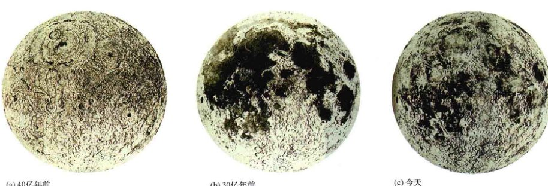
<div class="caption">
<strong>图8.27 月球的演化</strong><br/>
        关于月球的绘画：(a) 40亿年前，在许多陨石轰击消退后，表面有些凝固；(b) 30亿年前，熔岩通过表面裂缝填补了低洼的撞击盆地，形成光滑的月海；(c) 今天，原本光滑的月海现在变得坑坑洼洼，伴有很多过去30亿年中不同时间因陨石轰击而形成的环形山。[美国地质调查局 (U.S.Geological Survey)]
    </div>
<p>这种情况类似于第一个10亿年在地球上发生的情况——我们认为陨石撞击地球并导致表面熔化。但月球的质量比地球小得多，并没有包含足够的放射性元素使其进一步加热。放射性元素大概加热月球一点点，但不足以让一个热的、半固态的大体变成一个完全液态的状态。现在推测，月球内部的化学分化必然发生在此期间。如果月球有一个小的铁质核心，那么该核心是在这个时候形成的。</p>
<p>GRAIL号任务添加了一个有趣的新课题到月球早期历史的研究中——它发现，比许多大型撞击地形的形成时间更古老的月球表面（即，月球表面按年龄分为很多种，有的表面很古老，有的表面是新形成的，这里提到的就是新形成的表面。这些表面形成后又过了许多年，才形成了那些大型撞击地形）存在线性“堤坝”。“堤坝”被认为是一大片冷却的熔岩，它们在月球形成后最初几亿年里的一个以前未知的内部扩张时期，穿过月壳裂隙而涌出。</p>
<p>大约39亿年前，在地球的地壳凝固时，最严重的陨石轰击阶段停止。月球留下了一个坚硬的外壳，这将最终成为高地，另外还有许多凹陷的大型盆地，很快被熔岩的洪流填平，成为月海，如图8.27 (a) 所示。32亿~39亿年前，月球的火山用我们今天所看到的玄武岩材料填满了月海。最年轻的月海的年龄是32亿年，显示了火山活动平息的时候。月海是月球上最后一个熔岩流动的地方，距今已有30多亿年了。与更古老、更崎岖的高地相比，月海的光滑度掩饰了它们的高龄。</p>
<p>小个头天体降温降得更迅速，因为平均而言，它们的内部更接近表面。月球如此之小，其内部热量迅速流失，散逸到太空中。其结果是，它的冷却速度远远超过地球。随着月球冷却，火山活动结束，固体表面层厚度增加。除了由亿万年来不时地陨石轰击导致的数米尺度的月面侵蚀 [如图8.27 (c) 所示] 外，月球景观或多或少地在结构上显示出了30亿年前的样子。月球现在死了，它已经死了很长一段时间了。</p>
<h3>水星</h3>
<p>同月球一样，水星似乎在过去的40亿年里已经是一个地质上死去的世界。在月球和水星这两个星球上，没有正在进行的地质活动，这是一个厚的固态地幔阻止火山或构造运动的结果。因为阿波罗计划，对月球早期历史的研究更透彻，而水星的历史更多是要靠推断。事实上，我们所知道的关于水星的历史，主要是通过搜集与月球具有可比性的信息来获取的。</p>
<p>水星格外巨大的“铁芯”似乎是这个星球的位置造成的——当它大约46亿年前形成时，它位于早期太阳系的很热的内部区域——就像我们在第3章中讨论的凝聚理论所描述的那样，尽管其核心有点过分巨大，给理论家们带来了一些问题。（3.6节）</p>
<p>在信使号之前，一些研究人员认为，早期太阳星云的极端条件可能会蒸发水星大部分的原始外岩石层，猛烈的撞击也可能剥夺了该行星大部分的轻幔层。但是，这两种情景都预测了非常高的温度，并暗示当前的壳层应该缺乏某些含有钾、硫和其他元素的挥发性化合物，因为这些元素会首先丢失。相反，新的信使号的数据表明，水星壳的成分是非常“正常”的——类似其他类地行星的组成——有效地排除了这些水星核心的替代理论。（1.2节）</p>
<p>在接下来的5亿年里，水星熔化和分化，就像其他类地行星。它也遭受了与月球同样激烈的陨石轰击。水星比月球体积更大，因此冷却速度比较慢，所以它的壳层较薄，早期火山活动也比较常见。于是，更多陨石坑被抹除，形成了环形山间平原。围绕几个主要撞击点的平整平原在大约38亿年前的撞击中产生。</p>
<p>由于水星巨大的铁质核心的形成和冷却，这颗行星开始收缩，压缩了壳层。这种压缩使水星表面出现了悬崖，并可能通过挤压和关合表面上的裂纹和裂缝提前终止火山活动。因此，广泛的火山涌出形成月球月海的情形在水星上并没有发生。尽管较大的质量和更大的内部温度使水星的地质活跃期甚至比月球的时间更长。</p>
<div class="ultimate-question">
<h3>终极问题</h3>
<p>虽然水星似乎没有任何希望适宜人类居住，但我们还是常常在想，人类是否将最终占领月球——也许甚至将其“地球化”，将其改造以适合我们？50年前，人类出现在了朝着建立永久月球栖息地的道路上，但这些早期的（宏伟的）探索计划停滞不前。今天，将人类送上我们在太空中最近的邻居的政治意愿和经济手段都已经后退。应该由政府甚至联合国家来带领人类重返月球吗？还是将其交给私人企业才能得以最好的实现呢——就像几个世纪前发现美洲的冒险一样？</p>
</div>
<hr/>
<h2>章节回顾</h2>
<aside class="sidebar">
<h3>小结</h3>
<ol>
<li>月球绕地球旋转，水星是最靠近太阳的行星。月球和水星都是没有空气、几乎不变的星球，表现出极端的温度。水星没有永久的大气层，虽然它有一个薄薄的包层，里面是暂时被困的从太阳风来的气体。这两个天体的体积、质量都比地球小，引力也更弱。月球和水星没有大气做“毯子”，因此热的向阳面温度很高，冷的背阳面温度很低。阳光以非常倾斜的角度照射月球和水星的极地区域，因此那里的温度很低，其结果是这两个天体在两极存在数量显著的水冰。</li>
<li>月球上的主要表面特征是黑暗的<strong>月海</strong> (p.118) 和浅色的<strong>高地</strong> (p.118)。高地岩石密度小于月海岩石。高地岩石代表了月球的月壳，月海岩石则被认为起源于月球的月幔。月球和水星的表面布满了各种大小的<strong>环形山</strong> (p.118)，是由来自太空的陨石造成的。月球尘埃，被称为月壤，其成分大部分是粉碎的月球岩石，混有少量来自陨石撞击的材料。</li>
<li>地球和月球的潮汐互动造成了月球的<strong>同步轨道</strong> (p.121)，也使月球总以同一面朝着地球。月球赤道大的隆起可能表明，月球曾经自转得更快，也更接近地球轨道。水星的自转速度受太阳潮汐效应的强烈影响。由于水星的轨道偏心率，它的旋转不同步，但精确地每绕太阳运行2圈，自己就自转3圈。一个天体的自转速率简单地与其绕另一个较大天体公转的轨道周期相关的情况被称为<strong>自转-轨道共振</strong> (p.124)。</li>
<li>陨石撞击是月球和水星表面侵蚀的主要原因。月球高地比月海年老，有更多的环形山。环形山形成率随着环形山尺寸的增大而迅速减小。通过测量月球上由阿波罗宇航员带回地球的岩石的年龄，天文学家们可以推断过去的环形山形成率。然后，他们通过环形山形成率来推断没能获取表面样品的月面（和其他天体）区域的年龄。</li>
<li>月球上过去的火山活动的证据以环形山链的形式被发现，凝固的熔岩通道被称为<strong>月溪</strong> (p.132)。水星的表面特性和月球有着惊人的相似。这颗行星布满了撞击坑，很像月球高地。水星和月球之间的差异是水星缺乏月球上的月海，它的壳层上有广泛的<strong>环形山间平原</strong> (p.120)、巨大的裂缝，或叫<strong>悬崖</strong> (p.132)。平原和悬崖是火山活动的证据。水星表面有一处巨大的撞击盆地，被称为<strong>卡洛里盆地</strong> (p.133)，它正对着的星球另一面有一处<strong>怪异的地形</strong> (p.134)，这是撞击造成的地震波汇聚的结果。</li>
<li>根据<strong>撞击理论</strong> (p.136)，月球形成于一个火星大小的天体与年轻的熔融状态的地球的碰撞。这次碰撞将地球的地幔物质抛入轨道，这些物质随后重新聚集成月球。因此，月球岩石的成分类似于地球地幔的成分，但贫铁。这解释了观测到的月球和地球的密度差异。水星有一个很弱的磁场，这似乎是从其核心产生的。这个核心的半径约为行星半径的3/4，占了水星体积的40%以及其质量的60%。</li>
</ol>
</aside>
<section class="exercises">
<h2>复习与讨论</h2>
<ol class="question-list">
<li><strong>LO1</strong> 通过与地球的平均密度比较，在地球地壳中的水和岩石的密度告诉我们关于地球内部的哪些信息？</li>
<li><strong>POS</strong> 地质学家如何利用地震来获取地球内部的信息？</li>
<li><strong>LO2</strong> 什么是温室效应？它会对地球表面的温度造成什么影响？</li>
<li><strong>LO3 POS</strong> 举两个原因说明，为什么地质学家认为地球核心的一部分是液体。</li>
<li>地球的分化为我们提供了这个星球历史的什么线索？</li>
<li>什么是对流？它对（a）地球大气层；（b）地球内部，会产生什么影响？</li>
<li>放射性衰变如何在地球历史的早期加热地球的？这种加热在什么时候结束？</li>
<li><strong>LO4</strong> 什么进程造成了地表山脉、海沟和地球表面的其他大尺度结构？</li>
<li>要创造地球内部的发电机需要什么条件？该发电机具有什么效果？</li>
<li><strong>LO5</strong> 给出地球磁层的简要说明并介绍它是如何被发现的。磁层如何保护我们不受残酷的星际空间的影响？</li>
<li><strong>POS</strong> 我们怎么知道地球的磁场在过去发生过逆转？你如何看待地球磁场的逆转对我们这个星球上生命的进化可能会产生的影响？</li>
<li><strong>LO6</strong> 解释月球是如何产生地球海洋的潮汐的。</li>
<li>如果月球有像地球一样的海洋，那里的潮汐效应是什么样的？在月球的一“天”会有多少涨潮和退潮？与地球相比，其高度将如何变化？</li>
<li><strong>POS</strong> 如果地球旁边没有月球，你认为我们会发现关于潮汐力的任何线索吗？</li>
<li>在地球大气中起作用的温室效应是有益的还是有害的？请举例说明。增强的温室效应的后果是什么？</li>
</ol>
<h2>概念自测：选择题</h2>
<ol class="question-list">
<li>与月球的直径相比，水星的直径：(a) 更大；(b) 更小；(c) 基本相同。</li>
<li>鉴于月球的密度，水星的密度表明该行星：(a) 具有与月球类似的内部结构；(b) 具有致密的金属核心；(c) 具有比月球更强的磁场；(d) 年龄小于月球。</li>
<li>与月球的月相相比，水星从“新月”进入“满月”会：(a) 更快；(b) 更慢；(c) 时间大致相同。</li>
<li>与水星的表面相比，月球表面有显著：(a) 大的环形山；(b) 更多的大气；(c) 更多的月海；(d) 更深的环形山。</li>
<li><strong>VIS</strong> 根据图8.10（“月亮的同步转动”），月球围绕它的轴自转1次时，它环绕地球：(a) 不超过1次；(b) 恰好1次；(c) 超过1次；(d) 3次。</li>
<li>行星和卫星中呈现出最密集的撞击坑的有可能是：(a) 最古老的表面；(b) 被流星击中的次数最多；(c) 最强的重力；(d) 熔融的核心。</li>
<li>与月球相比，水星有：(a) 小得多的核心；(b) 一个更大的核心；(c) 类似大小的核心。</li>
<li>月球形成最可能的理论是，它：(a) 是对一个大的小行星进行引力捕获而形成的；(b) 与地球一起形成的；(c) 因被甩出了太平洋的碰撞形成；(d) 因地球与一个火星大小的天体碰撞而形成的。</li>
<li>水星比火星小，大概其冷却和固化：(a) 更快，因为它更小；(b) 更慢，因为它更接近太阳；(c) 时间大致相同，因为空间是一样冷的。</li>
<li>在太阳系50亿年年龄的尺度下，月球：(a) 年龄与地球相仿；(b) 比地球年轻很多；(c) 比地球年老很多。</li>
</ol>
<h2>问答</h2>
<ol class="question-list">
<li>在水星在其最接近地球时，雷达信号从地球发射到水星再回来需要多久？</li>
<li>月球的质量是地球的 1/81，月球的半径为地球半径的 1/4。在这些数字的基础上，计算一个 100kg 的宇航员，穿着 50kg 的太空服和背包，他在月亮上的总重量是多少？同一名宇航员在水星上的体重是多少？</li>
<li>在水星的近日点和远日点，看到的太阳的角直径分别是多少？</li>
<li>哈勃太空望远镜的角分辨率约为0.05"。它能分辨出月球（距离=380 000km）表面上最小的特征的尺寸是多少？对于水星表面又是多少——当水星最接近地球时？</li>
<li>阿波罗11号的指令舱在月球表面上方10km绕月球运转，它的轨道周期是多少？</li>
<li>比较太阳对水星的引力潮汐加速（在近日点时，太阳质量=$2 \times 10^{30}$kg）和地球对月球的潮汐效应（在近地点时）。（4.6节）</li>
<li>(a) 使用本书中给出的月球上10km环形山的形成率，估计如果将整个月球表面覆盖上这样大的新环形山，需要多长时间？在过去，环形山的形成率必须高出多少，才能让这个大小的环形山在月球形成以来的46亿年里覆盖整个月球表面？(b) 如果是1m大小的环形山呢？</li>
<li>假设分子的平均速度超过逃逸速度的1/6的话，行星到今天将失去其初始大气（见详细说明5-1）。那么，水星的质量一定要为多少才能使它还保留有氮气大气？（氮的分子量=28）</li>
</ol>
</section>
</article>